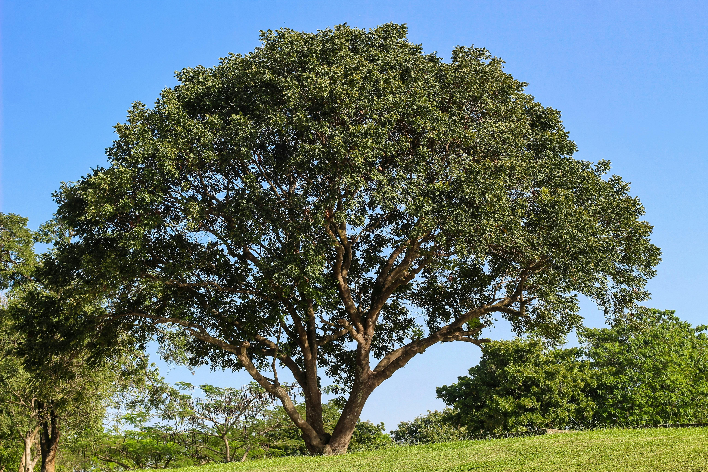

Notre histoire
Ancrés dans la terre du Saïss
Les Greniers du Saïss est une entreprise marocaine spécialisée dans l'export de produits de caroube (Kharoub) et de légumineuses. Établie dans la plaine fertile du Saïss, reconnue comme l'un des greniers céréaliers du Maroc, l'entreprise bénéficie d'un accès privilégié à des matières premières d'exception.
Nous travaillons en partenariat direct avec les agriculteurs et producteurs locaux pour garantir la qualité à la source, avant de conditionner et d'exporter nos produits vers les marchés internationaux les plus exigeants.